Take hold of it and pull
The drift is switched off here with speed="0", so the only thing that
turns this ring is you. Dragging the full width of the stage turns it half a way
round, and letting go while still moving throws it: the throw is what the pointer
was doing in its last frames, not the average of the whole drag, so a slow pull
that ends in a flick still flies.
When the throw runs out the ring does not stop between two pictures: it goes the rest of the way to the nearest one, and that picture — the one now facing you — leaves the ring and grows while the others fade. Nothing is singled out under the pointer, because passing beneath your hand is not the same as being chosen.
Press an arrow instead and the ring goes exactly one picture. Start a drag on the arrow and it turns the ring rather than pressing it: the pointer is only captured once the press has travelled far enough to be a drag, and the click that would have followed is dropped.
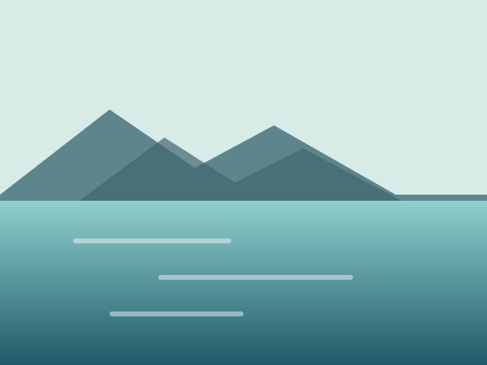
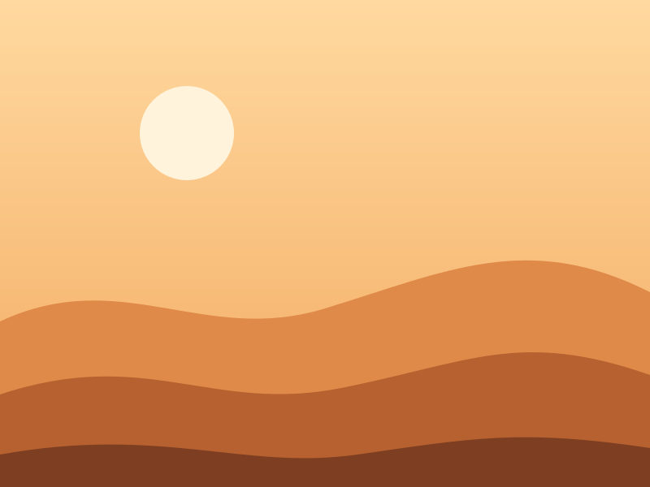
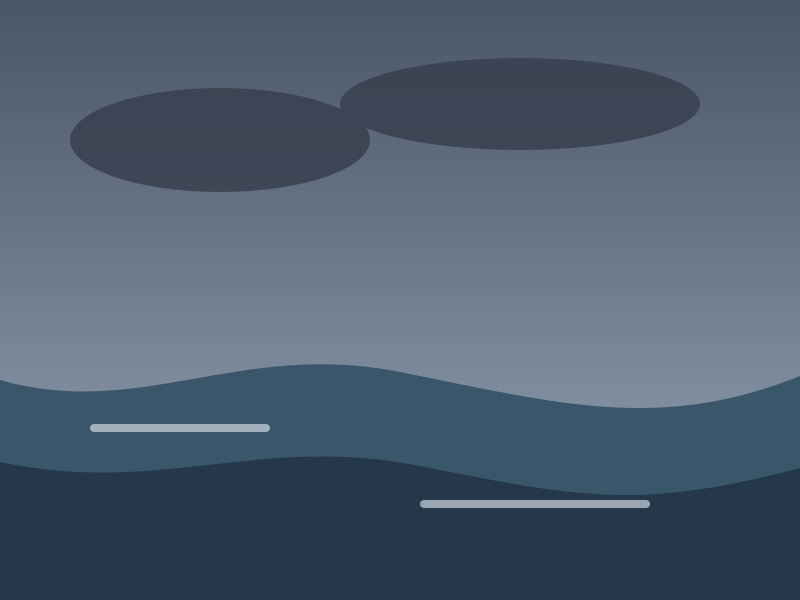
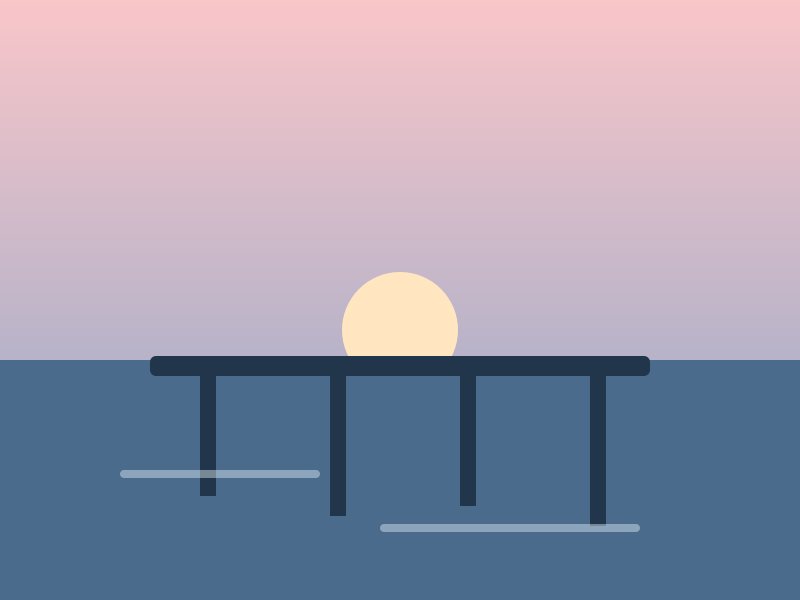
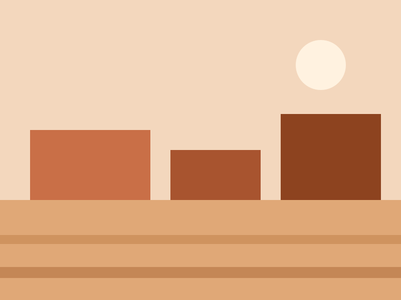
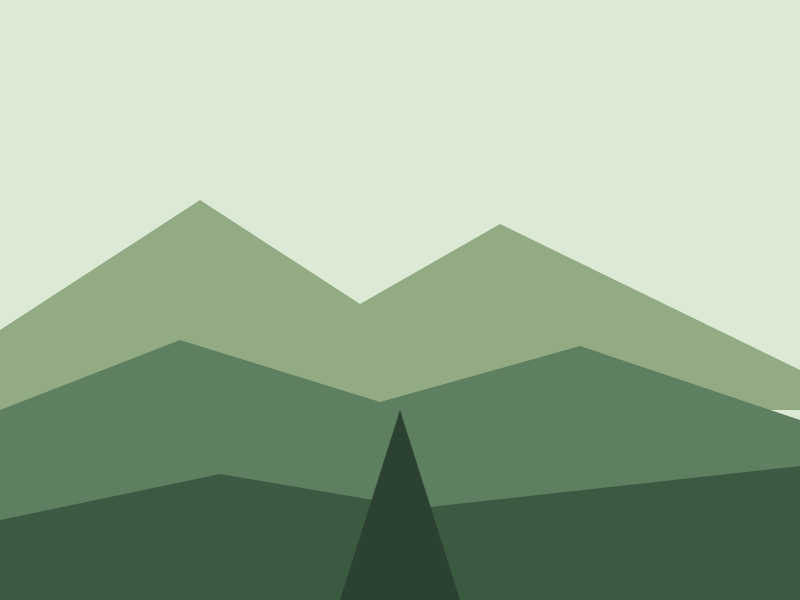
A ring that will not be dragged
no-drag leaves the drift, the hover and the keyboard exactly as they
are and takes only the gesture away, for a page where sideways dragging already
means something else.
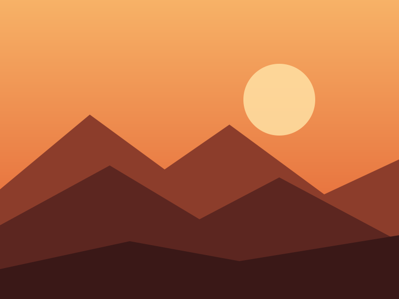
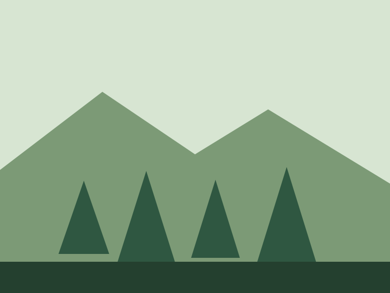
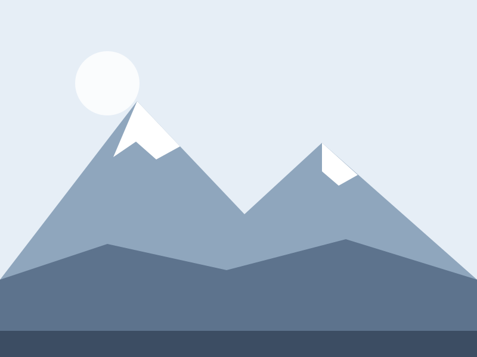
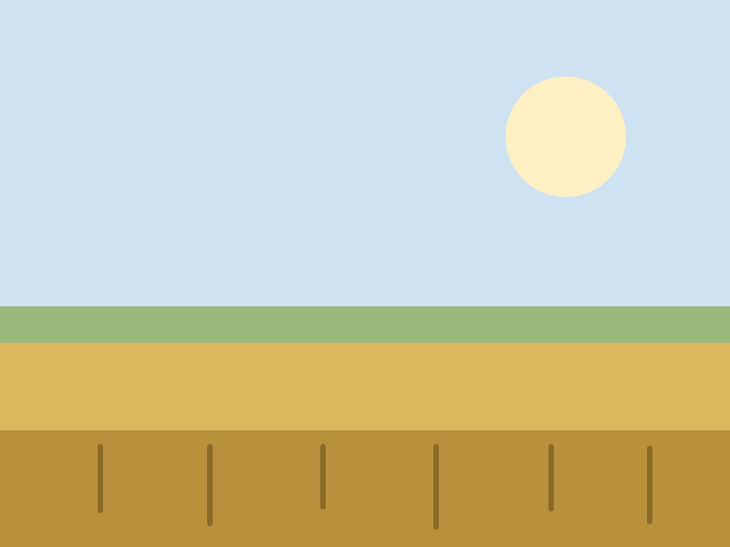
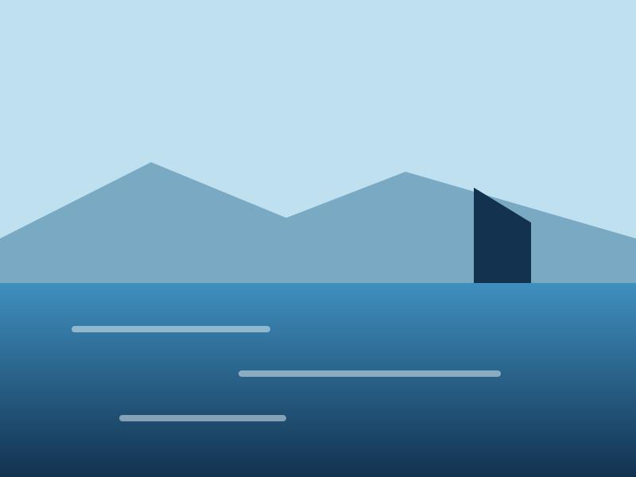
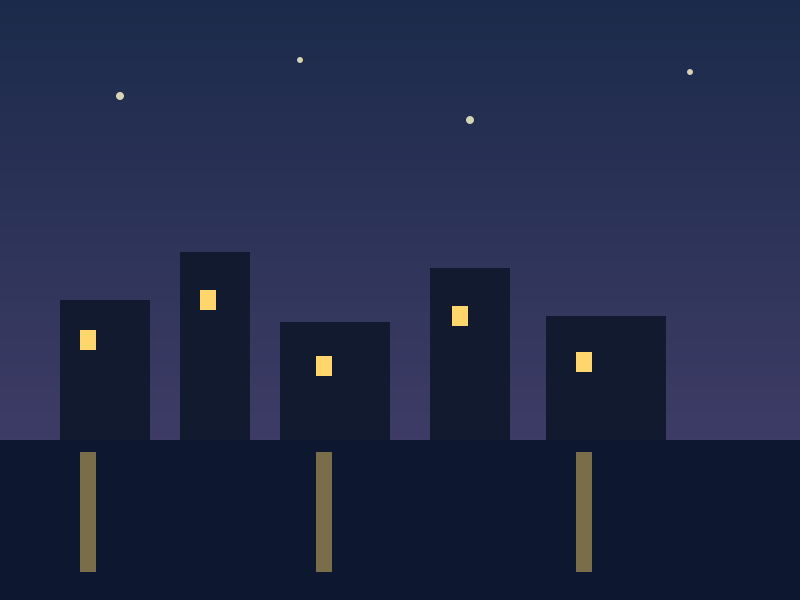